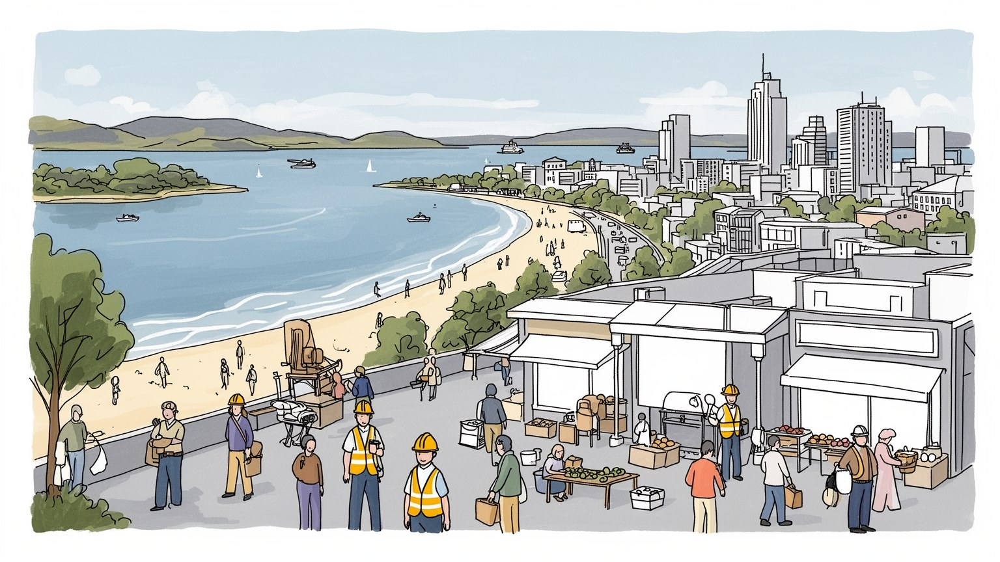
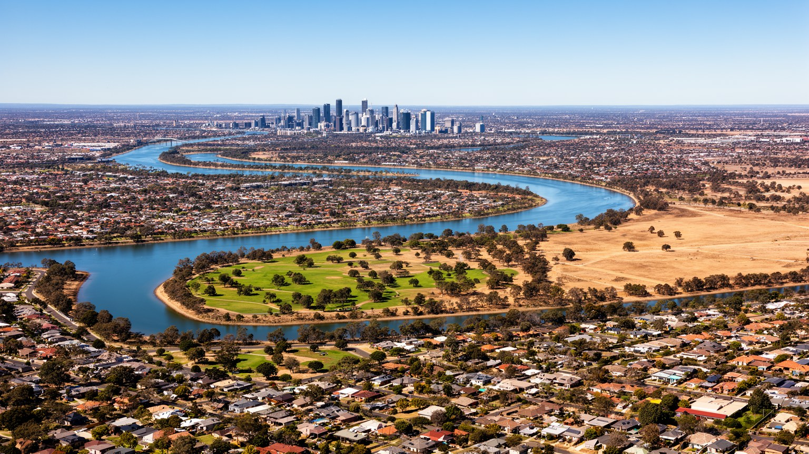
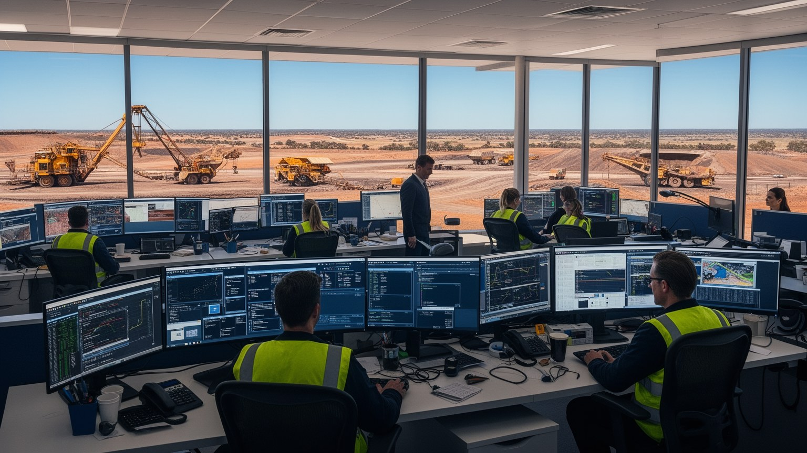
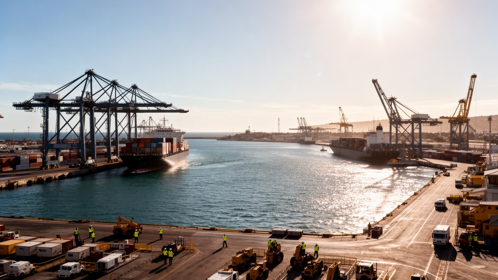
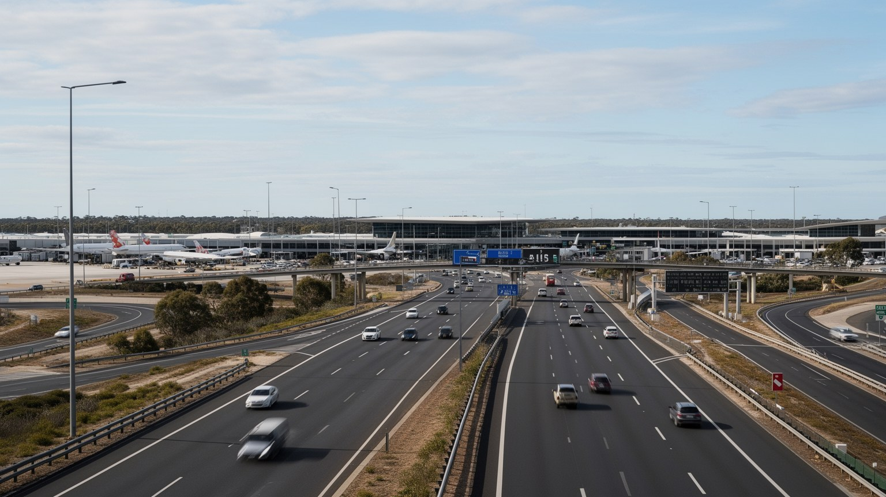
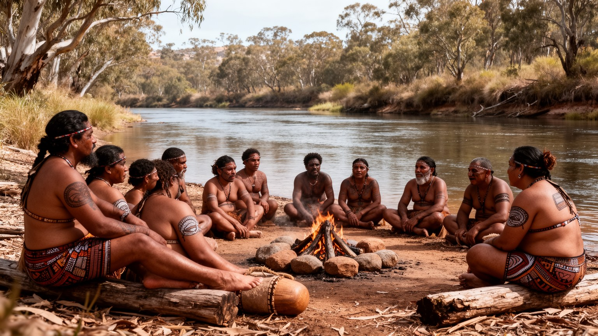
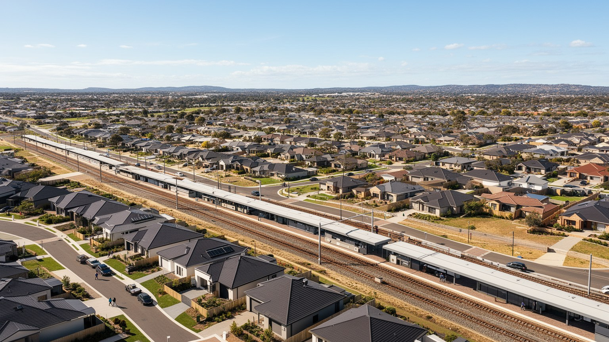
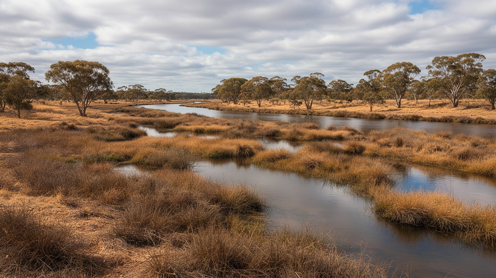
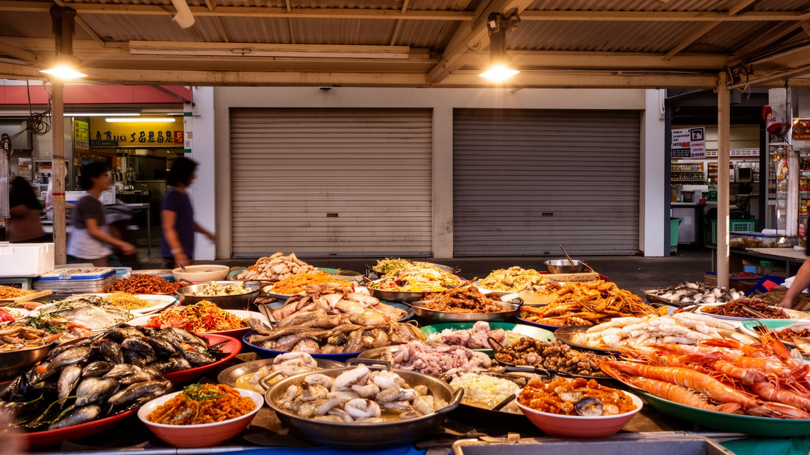
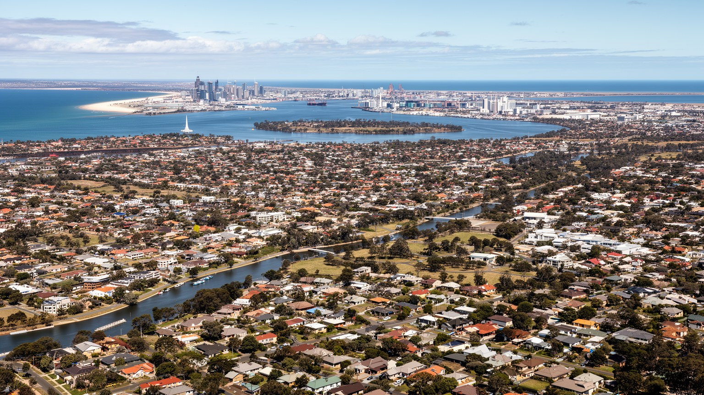

地政学
パースはインド洋に開く西オーストラリア州都で、アジア、アフリカ、資源地帯への視線を持つ。東部大都市から遠い孤立は、州政治、防衛、港湾、空路、移民政策を強く意識させる。遠さが都市の自立心を育てる街だ。

🇦🇺 オーストラリア / オセアニア / World City Atlas
インド洋に向かう西オーストラリア州都。スワン川、鉱業資本、港湾、広い郊外、先住民の記憶、乾いた夏、浜辺の暮らしが、遠隔性を都市の個性へ変えています。
都市の骨格
パースは東の砂漠と西の海に挟まれ、ほかの大都市から遠い。その距離は弱点であると同時に、鉱業、港湾、空港、大学、浜辺の生活を自立した都市圏へまとめる力にもなっている。

パースはインド洋に開く西オーストラリア州都で、アジア、アフリカ、資源地帯への視線を持つ。東部大都市から遠い孤立は、州政治、防衛、港湾、空路、移民政策を強く意識させる。遠さが都市の自立心を育てる街だ。
鉄鉱石、天然ガス、金、リチウム関連の本社機能、金融、法律、技術サービスが集中する。現場は内陸鉱山や沖合施設にあり、都市には管理、設計、調達、飛行勤務、家族生活が集まる。資源価格の波も家計を揺らす。
ヌーンガーの土地の記憶、英国植民の街路、移民の教会、モスク、寺院、大学文化が重なる。祭礼や食は海辺の余暇と結びつき、先住民の権利や地名の回復も都市文化の重要な課題として日常に響く。今も深い課題だ。
キングスパーク、フリーマントル、コテスロー、ロットネスト島は訪問者を引くが、住民には家賃、長い通勤、水不足、夏の暑さが現実である。青い海と広い郊外の魅力を、生活コストと環境制約と一緒に読む街だね。

パースの都市景観は、スワン川がゆるやかに曲がりながら中心部を抱え、下流でフリーマントルの港を通じてインド洋へ開く形で読める。川沿いの高層ビル、キングスパークの緑、住宅地、ヨット、湿地、橋は、乾いた大陸西岸の都市に水辺の輪郭を与えてきた。東へ向かえば内陸の乾燥地と資源地帯が広がり、西へ向かえば海と浜辺が暮らしの余白を作る。中心部は比較的まとまっているが、都市圏は南北へ長く伸び、車と鉄道が生活圏を支える。川は観光の背景だけでなく、先住民ヌーンガーの記憶、植民地の上陸、港湾物流、再開発、洪水管理を結ぶ軸である。水辺の美しさは、乾燥気候の中で水資源をどう扱うかという現実と切り離せない。パースを見るときは、都心のビルだけでなく、川、湿地、砂質の土壌、海風、遠い鉱山への道を一つの地形として重ねる必要がある。そこに、孤立した州都が外へ開き、内陸を支配する都市としての骨格が現れる。河岸の遊歩道や再開発地は、週末の散歩、通勤、祝祭を引き受ける公共空間でもある。水辺に誰が近づけるのか、湿地をどこまで守るのかという問いは、都市の成長と自然保護を結ぶ日常的な政治になる。さらに川は、暑い季節に風を運び、都市の方向感覚を作る身近な基準でもある。橋を渡るたび、都心、大学、住宅地、港への関係が読み替わる。朝夕の光も街の読み方を変える。

パースの経済は、街の外側にある巨大な資源地帯と深く結びつく。ピルバラの鉄鉱石、沖合の天然ガス、金、ニッケル、リチウム、希少鉱物は、世界の製鉄、電池、エネルギー転換、建設需要に連動し、その本社機能、金融、法律、測量、設計、保守、調達、人材管理がパースに集まる。都心のオフィスで決まる契約は、遠い鉱山の道路、港、宿舎、環境管理、先住民との協定、フライイン・フライアウトの勤務へつながる。高賃金の資源関連職は住宅価格や消費を押し上げる一方、資源価格の下落は雇用と州財政を急に冷やす。鉱業は都市を豊かにするが、労働者の家族分離、地域社会への負担、土地権、環境破壊、脱炭素への対応という重い課題も持つ。パースの洗練されたカフェや川沿いの景観の背後には、赤い大地の採掘現場と国際市場がある。都市の強さを読むには、資源利益が教育、住宅、交通、水管理へどう戻るかを見る必要がある。大学や専門学校は鉱山技術、地質、環境管理、データ分析の人材を育て、移民労働者も産業を支える。資源都市の繁栄は、現場を離れた都心の生活と、遠隔地の土地と労働をどう結び直すかで評価される。脱炭素の時代には、天然ガス依存と再生可能エネルギー、電池鉱物の需要が同時に進む。パースは資源を掘る都市であると同時に、資源の意味が変わる時代の判断拠点でもある。

パースの海への顔は、中心部から下流にあるフリーマントルで鮮明になる。フリーマントル港はコンテナ、資源関連物資、燃料、農産品、クルーズ、フェリーを扱い、州都とインド洋航路を結ぶ玄関である。古い倉庫、刑務所跡、港湾施設、魚市場、カフェ、移民の記憶が近い距離に重なり、港町は観光地であると同時に物流の現場でもある。パースはシドニーやメルボルンよりアジア西部、アフリカ東岸、中東に近く、インド洋の安全保障と通商を意識する都市である。港の機能は、都心の消費や鉱業経済を支えるが、トラック交通、騒音、土地利用、海岸環境との調整も必要にする。ロットネスト島へのフェリーや浜辺の余暇が海を親しいものにする一方、同じ海は輸出入、海軍、資源供給網、気候リスクの空間でもある。フリーマントルを歩くと、植民地の石造建築、港湾労働、移民の到着、観光の賑わいが一つの街路で読める。パースの国際性は空港だけでなく、この港町の潮の匂いから始まる。港の再配置や周辺開発をめぐる議論は、物流効率と歴史的景観、住民の静けさをどう両立させるかを問う。海の玄関が開かれているほど、都市は外部市場と海洋環境の変化に敏感になる。港で働く人びとの時間は観光客の動線とずれており、早朝の荷役や保守が都市の一日を先に動かす。港町の魅力は、その見えにくい労働を含めて初めて理解できる。

パースは世界で最も孤立した大都市の一つとして語られる。東のアデレードやメルボルン、シドニーまでは大陸を横切る長い距離があり、北の資源地域へも飛行機や長距離道路で向かう。遠さは物流費、航空路、医療搬送、文化交流、家族訪問、企業の意思決定に影響するが、同時に地域の自立心と独自の生活感覚を育ててきた。空港は鉱山勤務者の出発点であり、アジアや中東への国際線の窓口でもある。市内では郊外鉄道と高速道路が南北に伸び、広い住宅地から中心部や港、大学、病院へ人を運ぶ。車での移動は便利さを生む一方、渋滞、駐車、排出、移動弱者の問題を強める。孤立は観光客には静けさや余白として映るが、住民には物価、医療、教育、専門サービスへの距離として経験されることもある。パースを読むには、地図上の距離だけでなく、飛行機の時刻、鉱山への勤務周期、郊外から駅までの移動、海辺へ向かう週末の車列を重ねる必要がある。遠い都市であることが、暮らしの速度と都市政策を形作っている。遠隔性は文化の受け取り方にも影響し、巡回公演、展示、専門医療、大学研究のネットワークを計画的に呼び込む必要がある。だから移動の質は、単なる利便性ではなく、州都の公平性を測る尺度になる。オンライン化で距離の一部は縮まっても、貨物、医療、家族、現場労働は移動から逃れられない。遠さをどう支えるかが、都市の安心感を決める。

パースは植民地都市である前に、ヌーンガーの人びとの土地にある。スワン川、湿地、丘、海岸、季節ごとの移動、食物採集、儀礼の場所は、都市化によって消えたのではなく、地名、物語、抗議、教育、芸術、土地権の議論として今も戻ってくる。英国植民はこの土地を測量し、区画し、港と行政を置いたが、その過程で先住民の移動、言語、家族、聖地、生活基盤を大きく損なった。現代のパースでは、大学、美術館、公共空間、学校、自治体が先住民文化を可視化しようとしている一方、健康、住宅、司法、雇用、教育の格差は深い。川沿いの美しい景観を楽しむだけでは、誰の土地で、どの記憶が覆われてきたのかを見落とす。ヌーンガーの季節暦や地名を学ぶことは、観光の飾りではなく、都市の基礎を読み直す作業である。パースの公共性は、植民の歴史を認め、先住民の声を計画や文化政策に反映できるかで問われる。都市の発展を語るとき、鉱業の利益と同じくらい、土地との関係をどう修復するかが重要になる。公共事業や観光案内に先住民の言葉を添えるだけでは十分ではない。土地利用、教育、雇用、記念の方法に当事者の決定権があるかどうかが、和解を都市の実践へ変える。街路名、学校の授業、美術館の展示、川沿いの案内は、過去を飾る装置ではなく、現在の責任を示す場所になる。記憶を共有できる都市ほど、将来の開発も深く議論できる。

パースの暮らしは、広い空、庭付き住宅、車のある郊外生活というイメージと結びついてきた。都市圏は海岸線と鉄道、高速道路に沿って南北へ伸び、中心部から離れた住宅地にも学校、ショッピングセンター、公園、スポーツ施設が配置される。広さは魅力だが、家賃や住宅価格の上昇、低密度開発、長い通勤、水とエネルギーの消費、公共交通の弱い地域を生む。資源ブームの時期には高所得者の需要が住宅市場を押し上げ、若い世帯、低賃金労働者、学生、移民には負担が重くなる。中心部の再開発や集合住宅は選択肢を増やす一方、家族向けの手ごろな住まいが足りなければ郊外化は続く。車を持てる人には便利な都市でも、高齢者、障害者、若者、夜勤者には移動の壁が大きい。住宅を考えることは、土地の使い方、鉄道駅の密度、暑さに強い街路樹、水を使わない庭、近隣の店を同時に考えることである。パースの郊外はただの寝床ではなく、家族、スポーツ、学校、信仰、移民コミュニティが日常を作る場所だが、その広がりを持続可能にする設計が問われている。中心部に近い住まいを増やす政策は、景観や日照への不安と衝突しやすい。それでも、働く人が職場や学校へ短時間で届く都市に変えなければ、広さの魅力は生活時間の貧しさへ変わる。郊外の将来は、家の広さだけでなく、駅前の密度と近所で済む用事の多さで決まる。

パースの気候は地中海性で、夏は乾いて暑く、冬に雨が集中する。しかし近年は冬雨の減少と高温化が進み、水資源の管理は都市の根本課題になっている。かつてはダムへの流入に頼れたが、降雨パターンの変化により、地下水、節水、再生水、海水淡水化、庭の植栽転換が重要になった。緑の芝生と広い庭は郊外生活の象徴だったが、乾燥する都市で同じ景観を維持するには大きな水とエネルギーが必要になる。猛暑は屋外労働者、高齢者、子ども、低断熱住宅に住む人へ強く影響し、山火事の煙や熱波も健康リスクを高める。海風は夕方の救いになるが、気候変動は海岸浸食や高潮の不安も増やす。都市計画では、日陰、街路樹、透水性舗装、涼しい公共空間、公共交通、断熱住宅が生活の質を左右する。水管理は環境政策だけでなく、住宅価格、電気代、公園の維持、先住民の土地理解とも関わる。パースの美しい青空は、資源の制約を忘れさせるものではない。乾いた気候の中でどう快適に暮らすかが、都市の将来を決める。学校や職場の暑さ対策、屋外イベントの時間、貯水池の残量を知らせる広報も、都市生活の一部になる。気候適応を贅沢ではなく基本インフラとして扱えるかが、住みやすさを左右する。水を節約する暮らしは、庭の好みや洗車の習慣まで変える。小さな行動の積み重ねが、乾いた州都の持続性を支える。

パースの日常は、海辺の余暇だけでなく、市場、カフェ、移民の食堂、週末のスポーツ、学校の送迎、庭の手入れ、夜の港町で形作られる。フリーマントルの海産物、農産品市場、ワイン産地への近さ、アジア系や中東系の店、学生向けの安い食堂、資源企業で働く人の昼食が、都市の味を多層にしている。英国系の植民地文化を土台にしながら、イタリア、ギリシャ、インド、中国、東南アジア、アフリカからの移民が、料理、宗教行事、商店街、学校の友人関係を広げてきた。食の豊かさは観光にもつながるが、飲食業は家賃、人手不足、夜間交通、季節変動に左右される。都市が豊かに見えるほど、調理、清掃、配送、介護、小売の低賃金労働も見えにくくなる。パースの暮らしを読むには、川沿いのレストランだけでなく、郊外の買い物センター、移民食料品店、日曜のバーベキュー、学校行事、地域の礼拝後の食事を見る必要がある。食卓は、遠い州都に集まった人びとが互いの距離を縮める場所であり、生活費の上昇が最初に痛みとして現れる場所でもある。食料の多くは長い輸送網にも依存するため、価格や供給は気候、燃料、物流の影響を受けやすい。毎日の買い物は、都市の国際性と遠隔性を同時に感じる場になる。外食の多様さは歓迎されるが、長く残る店は近所の常連と働く人の生活に支えられる。味の地図は、移民史と家賃の地図でもある。
パース観光の魅力は、中心部の整った川沿いと、すぐ西に広がるインド洋の浜辺を一緒に体験できることにある。キングスパークからは市街とスワン川を見渡せ、コテスローやスカボローでは白い砂と夕日が都市の日常に入り込む。フリーマントルでは港町の歴史、刑務所跡、市場、魚料理、カフェを歩き、フェリーでロットネスト島へ渡れば、海、低木林、自転車、固有の動物が近い距離にある。観光はゆったりして見えるが、海岸救助、公共交通、宿泊価格、短期賃貸、環境保全、先住民の土地理解を必要とする。浜辺は無料の公共空間である一方、海に近い住宅地の高額化は、誰がその余白を日常的に使えるかを分ける。観光客が求める青い空と静かな砂浜は、住民にとっても健康、運動、家族、孤独からの回復を支える場所である。だから海岸の管理は景観づくりだけでなく、日陰、トイレ、バス、自転車道、安全情報、海洋生態系を含む公共政策になる。パースを訪れる価値は、名所の数より、都市と自然の境目が毎日の暮らしに開かれている点にある。観光が増えるほど、静かな浜辺や島の環境に負荷がかかり、住民の休日空間とも競合する。訪問者を迎えながら、日常の海辺を守る調整が都市の成熟を示す。夕日の美しさは強い記号になるが、海は危険も持つ。泳ぐ人、救助員、自然保護者、周辺住民の視点を重ねると、観光地は生活の共同管理の場になる。

パースを読むことは、遠さを欠点としてだけでなく、都市の性格を作る条件として見ることである。スワン川の中心部、フリーマントルの港、インド洋の浜辺、広い郊外、空港、内陸鉱山への飛行路は、離れた場所同士を一つの州都に結びつける。資源経済はパースに高い所得と国際的な役割を与えるが、価格変動、土地権、環境負荷、労働者の家族生活という課題も運ぶ。浜辺と公園は暮らしを明るくするが、水不足、暑さ、海岸リスク、車依存を隠すものではない。ヌーンガーの土地の記憶を抜きに、川や公園の美しさを語ることもできない。パースの世界性は、シドニーやメルボルンのような人口密度ではなく、インド洋、資源地帯、アジアとの回路、移民の日常から生まれる。静かで豊かな都市に見えるほど、その豊かさを誰が支え、誰が住み続けられるのかを問う必要がある。住宅、交通、水、文化、先住民との関係を同時に見たとき、パースは孤立した端の都市ではなく、気候変動と資源経済の時代を映す重要な都市として立ち上がる。遠い都市は外部から見えにくいが、その分だけ内部の選択が鮮明に表れる。資源で得た力を、生活の公平さと環境への備えに変えられるかが、これからのパースを読む鍵になる。観光客には静かな余白が見え、投資家には資源の窓口が見え、住民には通勤、水、家賃、浜辺の距離が見える。その複数の見方を同時に置くことで、都市の輪郭はより正確になる。